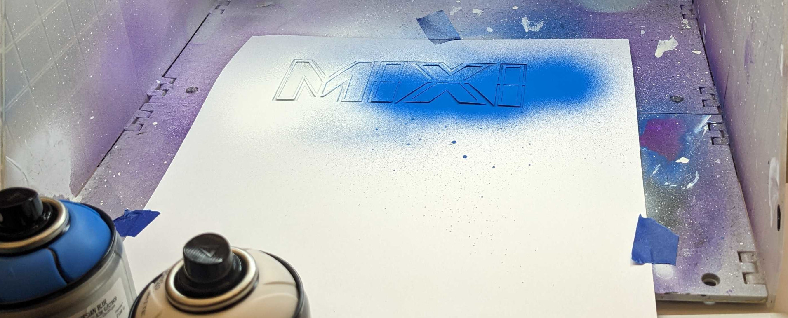

Summer 2024
Maker Lab 1: Design Lab
Keywords: art, aesthetics, politics, creativity, design, STEAM, maker education, sewing, scratch, hard fun
STEAM Teaching and Learning ESM 501, 3 credits
Instructors:
- Matthew X. Curinga [mcuringa@adelphi.edu]
- Eric Miles [emiles@adelphi.edu]
Materials:
There are no required textbooks for this course. All course materials will be provided at class meetings.
Meetings:
- Monday & Wednesday, 4pm-7pm
- Saturday (6/8 & 6/15), 10am-4pm
Location:
Adelphi Brooklyn Center Room 7122 (7th floor maker lab)
In the Design Lab students encounter the big ideas in Maker Education and STEAM as well as the practices of the maker lab. Emphasis is placed on engagement in and critique of the practice of “making” through foundational literature and hands on studio culture with a focus on creativity and learning.
Goals
- Students will explore and analyze foundational and contemporary theories and approaches of MakerEd and STEAM texts and respond through a series of written, audio and video prompts.
- Students will engage conceptual, aesthetic, and practical aspects of MakerEd and STEAM through the generation and production of a series of material and digital prototyping and final projects. This includes creative problem-solving, collaboration and critical inquiry as they ‘make’ with others. Both processes and final work will be included in student-created digital portfolios.
- Students will analyze and evaluate the role of MakerEd and STEAM theories and practices in educational settings through a final interactive online zine that curates their learning across the course.value
- Students will have fun and experience joy in learning, understanding and demonstrating the role of play, risk-taking and experimentation in making and creating in MakerEd and STEAM environments.
Class schedule
This is an intensive, summer course where we squeeze a full semester’s worth of work into two weeks! Weekday classes run from 4pm-7pm, and our two Saturday sessions will run from 10am-4pm. In addition to class meetings, you will need to spend time outside of class in the maker lab, and arrange time to complete your museum visits.
Readings listed below are due for that class session, including our first meeting. Please come to class prepared to discuss the readings.
| # | date | topic | readings |
|---|---|---|---|
| 1 | Mon, Jun 3 | STEAM & Maker Ed | Martinez & Stager; Runco & Jaeger |
| 2 | Wed, Jun 5 | Public Art / Public Pedagogy | TBD |
| 3 | Sat, Jun 8 | Fashion & Wearables Studio | Cipolla; O'Brien |
| 4 | Mon, Jun 10 | Curriculum Design | Noddings |
| 5 | Wed, Jun 12 | Constructionism & Hard Fun | Papert (1991 & 2002) |
| 6 | Sat, Jun 15 | Scratch Story Games | TBD |
| 7 | Mon, Jun 17 | Aesthetics & Politics | Greene; Forensic Architecture |
| 8 | Wed, Jun 19 | Final Studio | - |
Readings
Cipolla, C. (2019). Build It Better: Tinkering in Feminist Maker Pedagogy. Women’s Studies, 48(3), 261–282. [pdf]
Forensic Architecture, & Poitras, L. (Directors). (2019). Triple Chaser [Documentary, Short]. Praxis Films.
Martinez, S. L., & Stager, G. (2013).Chapter 1: An Insanely Brief and Incomplete History of Making. In Invent to learn: Making, tinkering, and engineering in the classroom. Constructing Modern Knowledge Press. [pdf] [epub]
Noddings, N. (2013). Standardized Curriculum and Loss of Creativity. Theory Into Practice, 52(3), 210–215. [pdf]
Greene, M. (1977). The Artistic-Aesthetic and Curriculum. Curriculum Inquiry, 6(4), 283–296. [pdf]
O’Brien, K. C. (2021). Fibre Artists and Outsider Algorithms: Rethinking Ethnomathematics Through Contemporary Craft. For the Learning of Mathematics, 41(1), 8–13. [pdf]
Papert, S. (1991). Situating constructionism. In I. Harel & S. Papert (Eds.), Constructionism (pp. 1–10). Praeger. [mit.edu]
Papert, S. (2002). Hard Fun. Bangor Daily News. Bangor, ME. Bangor Daily News.
Runco, M. A., & Jaeger, G. J. (2012). The Standard Definition of Creativity. Creativity Research Journal, 24(1), 92–96. [pdf]
Assignments
| Assignment | Due Date | Points |
|---|---|---|
| Participation | Ongoing | 10 |
| Artist’s Journal | Ongoing | 10 |
| Museum Visits | Ongoing | 10 |
| Public Art Encounters | Ongoing | 10 |
| Reading responses | Ongoing | 10 |
| Maker Lesson | June 15 | 10 |
| Maker Vest | June 12 | 15 |
| Scratch Story Game | June 19 | 15 |
| Online Portfolio | June 19 | 10 |
Participation
A class is a place where we study together. Your participation will help make this a great class.
To get full participation points:
- Attend every class session. This is a short course and there are no excused absences outside of medical exemptions with a doctor’s note, modification from the Student Access Office, or a religious holiday.
- Don’t be late. Don’t leave early.
- Do the readings. Come to class prepared to discuss the readings. If it’s obvious that you didn’t do the readings, or made little effort to engage with or try to understand them, you will lose participation points.
- Maintain the lab. We are all responsible for maintaining the maker lab, closet, and our materials. Help us set up, help keep things clean and organized, help us put things away.
- Be bold. This is a class about creativity and making. We want you to take risks, to try new things. This is not an easy thing!
- Be kind and respectful. We love a spirited debate, strong opinions, and learning new things from each other. But those practices only work if we offer our respect to the other participants and assume they are operating in good faith, too.Reading responsesReading reReading responsessponses
- Communicate. Read your emails. Post on Discord. Talk to your partners. Let the instructors know if there’s a problem or question. Tell us how to make things better.
Artist’s Journal
Everyone will keep an Reading responsesartist’s journal during this course (and after, we hope). The Journal is a place for you to record thoughts, plan designs, sketch ideas, and reflect. There will be some “assigned” journal entries (see below), but mostly it is meant for your own benefit. Journaling might not be for you… but for the purpose of this course, try it out with an open mind.
To “grade” your journal, you will upload photos of key pages to your online portfolio and write a brief (~500 word) reflection about how you used it, and what you thought of the journal.
Museum Visits
You will visit (at least) 3 museums outside of course hours. Each visit must be at least one hour long. You must keep journal entries for each visit that log the museum, the date and time of the visit, and key exhibitions or works that you engaged with. You should also document your visit with sketches, photos, and videos. You will create an entry on your online portfolio for each visit. Your entries should reflect on the visit in terms of course readings and discussions, including considering how the museums work as public pedagogy, the learning design, the aesthetic experience, politics of the museum, etc.
You must visit at least one of the following “STEM” museums:
- New York Hall of Science
- MoMath: Museum of Mathematics
- Museum of the Moving Image
- American Museum of Natural History
You can use your library card (New York, Brooklyn, or Queens) to get free culture pass to many museums in the city. Even if you can’t take advantage during our short course, it is a great resource.
The instructors will post other interesting museum exhibits and events on Discord as well as invitations to join us for informal, optional fieldtrips during the course. You can also check out the NYC Arts Calendar for further ideas and events.
Maker Lesson
You will read the New York State and professional standards for your content area (Math, Biology, Physics, Comp Sci, etc.) as well as the Art Standards. You will create your own lesson plan that addresses one of the standards from your content area and one of the art standards. Your lesson must incorporate key ideas of maker education and steam learning. The instructors will provide links to sample lesson plans as well as example templates for creating a lesson plan.
Plan a lesson for a 45 minute class.
At the very least, your lesson plan must include the following items:
- a brief narrative describing what happens before and after this lesson
- learning goals and standards covered in the lesson
- materials list
- a timeline of activities
- how the lesson will be assessed
- any instructor created materials (slides, handouts, examples)
You will submit your lesson as a Google Doc shared with the instructors, with links to all external materials and resources.
The lesson will be evaluated on the following criteria:
- creativity of the lesson
- alignment with standards
- integration with maker and steam learning
- viability of the lesson in a classroom setting
Optionally add your lesson plan to your portfolio.
Public Art Encounters
New York is full of public art: famous sculptures, big shows, street art, hidden and half forgotten works, and more. You will document at least 3 public art works that you encounter. At least one of these should be “sanctioned” work and at least one should be “unsanctioned” work.
Document your encounter in your journal with at least one sketch of each work, and notes on the context, your experience, and thoughts on the work. Further document your encounter with photos and videos. Consider things like the medium of the work, the scale (aka size), the materials, when it was created, how it was funded ( or not).
Upload your documentation to your online portfolio.
Reading Responses
For each reading, you will write a “reading response” in your journal prior to the class session (except for the first meeting – we will write them in class). Your response must include a 150 word summary of the reading, it should also include notes, questions, reference to key passages, and your thoughts.
Reading responses will be checked by the instructors at the start of each class. For some sessions you will read your response aloud or share with a partner.
Maker Vest
We are all going to make a vest. Working from patterns provided, you will design your own vest, cut the fabric, and sew it together. You will design an embroidery or patch for your name, and also a decorative design for the back of the vest. The vests will include “wearable” technologies powered by Adafruit Qt Py microcontrollers. Your technology integration can be playful, aesthetic, or functional.
In addition to the patch and tech, you will must also design and 3D print an element for your vest. This could be a button, a zipper pull, a buckle, or something else.
We will begin working on the vests during our first Saturday session, but you will need to spend time outside of class to complete the project.
Your vest will be evaluated on:
- the quality of your craft
- the innovations found in your design (don’t just copy something your found online)
- the demonstration your ability with the tools of the maker lab:
- microcomputer
- circuits
- 3D design and printing
Scratch Story Game
The Scratch programming language is many students’ first introduction to computer science and computer programming. Scratch is the direct descendent of the Logo programming; Seymour Papert’s constructionist programming language.
For this project you will work in a team of two to design, code, and test a “story game” in Scratch. You will create original art for your game as vector graphics, create a compelling narrative to drive the game, and incorporate puzzles, challenges, and other interactive elements.
Your will build your game on top of our Scratch game platform which will make provide basic mechanics such as keeping track of active scenes, inventory, score, etc. You will not just create a game, but a game-for-learning (aka serious game) that incorporates elements of your content area.
To complete this assignment, you will submit your public game on Scratch. Each team member will also submit a reflection on their portfolio site that describes the content areas addressed, the theory behind the game (why is it fun? who is it for? how does it teach?). Also discuss the development and game testing process. Finish your reflection with ways that you could improve the game.
Your game will be evaluated on:
- Fun: how well does it work as a game?
- Story: does the story make sense? are the characters compelling? does the player make real choices?
- Art & Design: does the game visually and aesthetically enhance the learning and story goals? are the developers able to create a polished look and feel?
- Programming: do the developers demonstrate understanding of key CS concepts such as loops, conditionals, variables, events, functions, and parallelism? do they understand key Scratch concepts such as sprites, costumes, and backdrops?
- Learning: does the game teach something? is it worth teaching? are the “play” and “learning” elements integrated?
Online Portfolio
You will create an online portfolio that will be used throughout the Master’s in STEAM Teaching and Learning. While the portfolio will house many of your assignments, you are also responsible for designing a site that reflects your identity as a maker and educator.
The portfolios will be created using Google Sites with your Adelphi email account. You will be responsible for maintaining the site permissions and making sure that it is available to the instructors and other students in the class, and that some aspects (at least) are fully public. Everyone is encouraged to use Google Sites, but if you have a strong preference for another platform, you can use it once you have instructor approval.
Your portfolio will be evaluated on how well you demonstrate your ability to use the features of your online platform, you ability to achieve a consistent and professional design and user experience, the quality of your content (well edited writing, thoughtful images, clear audio, etc), and the overall creativity and originality of your site.
Session 1: STEAM & Maker Ed
Mon, Jun 3, 4pm-7pmIn our first meeting we will get to know each other, a feeling for the main goals of the class, and start to play around with some of the tools and methods we will be using in this summer course. We will make sure that everyone has their online portfolio up and running, and that everyone has started their artist’s journal.
Goals:
- Understand the goals of the course
- Get to know each other and the instructors
- Develop basic vector graphic design skills
- Cut stencils with the Cricut
- Begin an online portfolio
Agenda:
- Welcome
- Reading discussion
- Cricut Stencils & Spray Paint
- Google Sites & Online Portfolis
- Journal Design / Site Design
Due:
- Read Martinez & Stager; Runco & Jaeger
- Join Discord (see email for invite)
- Install:
Resources:
- Tutorials/Docs:
- Essential Inkscape [sign in with your adelphi account for free access]
- Google Sites
- Fonts:
- Images (vector and raster):
Session 2: Public Art / Public Pedagogy
Wed, Jun 5, 4pm-7pmField Trip: We are going to meet at 4pm at BRIC Arts Media House in Brooklyn on 647 Fulton St, Brooklyn, NY 11217.
At BRIC, we will get a gallery tour (including a mural designed by Prof. Eric Miles) and a tour of their media facilities and studios. After the tour, we will walk back to the Brooklyn Center, stopping at several public art sites along the way.
Meet outside of BRIC at 3:55. Please don't be late.
Goals:
- Investigate BRIC as an institution fostering public art and a site of informal learning
- Become familiar with various types of public art
- Develop skills in analyzing and describing works of art
- Design basic circuits that power LEDs
Agenda:
- 4-5pm: BRIC Tour
- 5-6pm: Public Art Walk
- 5-7pm: Class/lab
- reading discussion
- paper circuits for journals
Due:
- Readings TBD
Session 3: Fashion & Wearables Studio
Sat, Jun 8, 10am-4pmSession 4: Curriculum Design
Mon, Jun 10, 4pm-7pmSession 5: Constructionism & Hard Fun
Wed, Jun 12Session 6: Scratch Story Hackathon
Sat, Jun 15, 10am-4pmSession 7: Aesthetics & Politics
Mon, Jun 17, 4pm-7pmSession 8: Final Studio
Wed, Jun 19Adelphi University Services, Policies, and Regulations
Student Access Office and Disability Accommodation
If you have a disability that may significantly impact your ability to carry out assigned coursework, please contact the Student Access Office (SAO) at 516-877-3806 or send an email to sao@adelphi.edu. The staff will review your concerns and determine, with you, appropriate and necessary accommodations. Please allow for a reasonable time frame for requesting ASL Interpreters or Transcription Services. Because of the additional challenges of instruction during the pandemic, it is especially helpful for the instructor to be aware of students’ need for accommodations.
Reasonable accommodations are available in online classes for students with a documented disability. Please note that due to the nature of online courses, some accommodations approved for on-campus classes may not apply. If you have a disability that may significantly impact your ability to carry out assigned coursework, please contact the Student Access Office (SAO) at 516-877-3806 or send an email to sao@adelphi.edu. We will review your request and determine with you appropriate and necessary accommodations. Please allow for a reasonable time frame for requesting ASL Interpreters or Transcription Services.
Student Counseling Center (SCC)
The Student Counseling Center (SCC) provides confidential and professional virtual mental health counseling services, resources, and referrals to support the academic and personal success, health, and well-being of Adelphi students without additional charge. Especially with the additional stress resulting from the Covid-19 pandemic, students are encouraged to seek support from the SCC when needed. Counselors are available to help students cope with a variety of stressors and personal issues that may interfere with their academic and personal experiences. The Center also supports students who may be feeling suicidal or in crisis. To schedule an appointment, please call (516) 877-3646, email scc@adelphi.edu . If you need immediate assistance, walk-in services are available during the fall and spring semesters Monday-Friday 9am-5:00pm. Additional information can also be found by visiting https://scc.adelphi.edu.
Need support when the SCC is not available? For 24/7 emergency counseling, referral, or assistance, please contact:
- Long Island Crisis Center (516) 679-1111
- National Suicide Prevention Lifeline (800) 273-TALK (8255)
- Crisis Text Line: Text PAWS to 741741
- Adelphi Office of Public Safety:
- Off campus: (516) 877-3511
- On campus: Extension 5 on any campus phone
- 911 (for immediate health-related emergency)
The Center for Academic Support and Enrichment (CASE; formerly The Learning and Writing Centers)
https://www.adelphi.edu/case/case@adelphi.edu (516) 877-3200 Nexus 132
CASE programs and services--like individual tutoring in writing and subjects across the curriculum, small group study sessions, academic coaching, and targeted workshops--help students explore, deepen, and extend their classroom learning. Support programming focuses on establishing foundational skills and techniques of studentship, like time management and note-taking. Enrichment services develop higher-order critical thinking skills and problem solving skills inherent in both abstractions and applications of curricular study.
Contact us as CASE@adelphi.edu at ext. 3200, or via our eCampus tab, to review our full slate of real-time (in person and remote) and asynchronous services. These are included in your tuition so you’ve already bought them! Don’t miss out on the opportunity to supercharge your college experience! Many services require reservations, especially late in the semester. Reserve a spot on our scheduling portal, and/or join the self-directed virtual CASE LAB. Get on the CASE, and take your Adelphi experience to the next level.
The Adelphi Honor Code
The University is an academic community devoted to the pursuit of knowledge. Fundamental to this pursuit is academic integrity. In joining the Adelphi community I accept the University’s Statement of Academic Integrity and pledge to uphold the principles of honesty and civility embodied in it. I will conduct myself in accordance with ideals of truth and honesty and I will forthrightly oppose actions which would violate these ideals.
Code of Academic Honesty
The Code of Academic Honesty prohibits behavior that can broadly be described as lying, cheating, or stealing. Violations of the Code of Academic Honesty will include, but not be limited to, the following:- Fabricating data or citations
- Collaborating in areas not approved by the professor
- Unauthorized multiple submission of one’s own work
- Sabotage of others’ work, including library vandalism or manipulation
- Plagiarism
- The creation of unfair advantage
- The facilitation of dishonesty
- Tampering with or falsifying records
- Cheating
- Other forms of academic dishonesty
Copying and pasting from any source into your assignments or exams without quotation marks, citations and references, constitutes plagiarism. Students are expected to produce and submit original work and to cite all sources appropriately. Unauthorized collaboration on any work, or the presentation of someone else’s work as your own, is plagiarism. Content generated by an Artificial Intelligence third-party service or site (AI-generated content, e.g. ChatGPT) without attribution or authorization is also a form of plagiarism. Unless explicitly stated, artificial intelligence-based technologies, such as ChatGPT or word mixing software, cannot be used to generate responses (partial or otherwise) for student assignments or exams.
If you are unsure about what plagiarism or another form of academic dishonesty are, please reach out to me to discuss it as soon as possible. An allegation of an academic integrity violation of this section may be referred for further review and could result in disciplinary action. https://www.adelphi.edu/conduct/academic-dishonesty/
Student course evaluations
During the last two weeks of the class, you will receive notification, via email and eCampus, that the course evaluation is available for your input electronically. Your feedback is valuable and students are strongly encouraged to respond. Please be assured that your responses are anonymous and the results will not be available to the instructor until after course grades have been submitted after the semester ends.Religious observance policy
Adelphi University welcomes diversity in its community, and respects various religious observances. Students who anticipate being absent, due to their religious observance, are required by Adelphi University to notify their professors at the start of the semester. This will allow the faculty to take these observances into consideration in light of their course exam and assignment schedules. Students absent from class, clinical experiences, practice, labs, etc. on those days, after prior notice to the professor, will not be penalized for any exam or assignment deadline missed because of those absences. Students must contact the instructor to work out suitable arrangements for make-ups or other satisfaction of academic requirements.
COVID-19 Policies
The policy for this class is mask optional.